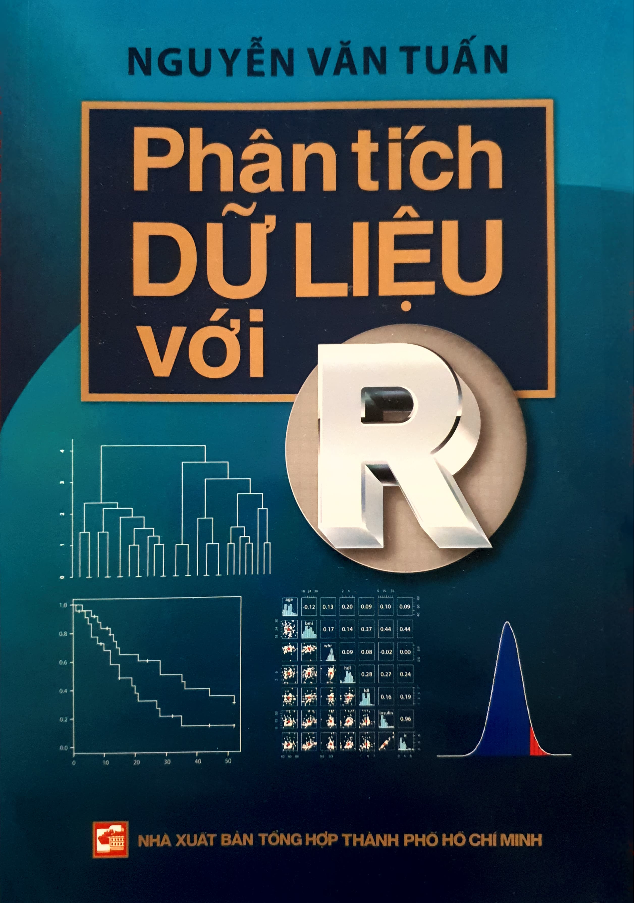

Phân tích DỮ LIỆU với R
2020-08-12
Lời nói đầu

Thống kê là một bộ môn khoa học về dữ liệu. Dữ liệu có thể được thu thập từ những nghiên cứu khoa học, nhưng cũng có thể bắt nguồn từ những “thí nghiệm tự nhiên” trong xã hội và đời sống hàng ngày. Khoa học thống kê (statistical science) và những phương pháp thống kê giúp chúng ta chuyển hoá dữ liệu thô thành thông tin, và với kiến thức chuyên ngành, biến thông tin thành tri thức. Do đó, khoa học thống kê đóng một vai trò không thể thiếu được trong việc hoán chuyển dữ liệu thành thông tin và tri thức.
Trái với quan điểm của nhiều người xem thống kê là một công cụ, trong thực tế các phương pháp phân tích dù dựa vào nền tảng của toán học và xác suất, nhưng đó chỉ là phần “kĩ thuật”, phần quan trọng hơn là thiết kế nghiên cứu và diễn giải ý nghĩa dữ liệu. Người làm thống kê, do đó, không chỉ là người đơn thuần làm phân tích dữ liệu, mà phải là một nhà khoa học, một nhà suy nghĩ (thinker) về nghiên cứu khoa học. Chính vì thế, mà khoa học thống kê đóng một vai trò cực kì quan trọng, một vai trò không thể thiếu được trong các công trình nghiên cứu khoa học, nhất là khoa học thực nghiệm. Có thể nói rằng ngày nay, nếu không có thống kê thì các thử nghiệm gen với triệu triệu số liệu chỉ là những con số vô hồn, vô nghĩa.
Một công trình nghiên cứu khoa học, cho dù có tốn kém và quan trọng cỡ nào, nếu không được phân tích đúng phương pháp sẽ không có ý nghĩa khoa học gì cả. Chính vì thế mà ngày nay, chỉ cần nhìn qua tất cả các tập san nghiên cứu khoa học trên thế giới, hầu như bất cứ bài báo y học nào cũng có phần “Statistical Analysis” (Phân tích thống kê), nơi mà tác giả phải mô tả cẩn thận phương pháp phân tích, tính toán như thế nào, và giải thích ngắn gọn tại sao sử dụng những phương pháp đó để hàm ý “bảo kê” hay tăng trọng lượng khoa học cho những phát biểu trong bài báo. Các tạp san y học có uy tín càng cao yêu cầu về phân tích thống kê càng nặng.
Một trong những phát triển quan trọng nhất trong khoa học thống kê là ứng dụng máy tính cho phân tích và tính toán thống kê. Có thể nói không ngoa rằng không có máy tính, khoa học thống kê vẫn chỉ là một khoa học buồn tẻ khô khan, với những công thức rắc rối mà thiếu tính ứng dụng vào thực tế. Máy tính đã giúp khoa học thống kê làm một cuộc cách mạng lớn nhất trong lịch sử của bộ môn: đó là đưa khoa học thống kê vào thực tế, giải quyết các vấn đề gai góc nhất và góp phần làm phát triển khoa học thực nghiệm. Ngày nay, với một máy tính cá nhân, bất cứ ai cũng có thể thực hiện những phân tích thống kê phức tạp trong vòng vài giây mà trước đây phải tốn hàng tháng trời mới hoàn tất.
Nhưng nếu máy tính mà không có phần mềm thì máy tính cũng chỉ là một đống sắt hay silicon “vô hồn” và vô dụng. Một phần mềm đã, đang và sẽ làm cách mạng thống kê là R. Phần mềm này được một số nhà nghiên cứu thống kê và khoa học trên thế giới phát triển và hoàn thiện trong khoảng 20 năm qua để sử dụng cho việc học tập, giảng dạy và nghiên cứu. Cuốn sách này sẽ giới thiệu bạn đọc cách sử dụng R cho phân tích thống kê và đồ thị.
R là một ngôn ngữ thống kê học, nhưng cũng có thể xem là một phần mềm có thể sử dụng cho các phân tích thống kê. Trong khoảng một thập niên qua, R đã trở thành cực kì phổ biến trong các đại học trên thế giới, và được dùng như là một phương tiện cho giảng dạy về thống kê học. Vì R hoàn toàn miễn phí nhưng có năng lực phân tích dữ liệu cao hơn các phần mềm thương mại (như SPSS, SAS, Stata, v.v.) nên các chuyên gia dự đoán rằng R sẽ trở thành một nhu liệu thống kê học phổ biến nhất trong tương lai gần. Do đó, chúng ta cần phải học và “làm quen” với R qua sử dụng nhu liệu này trong các phân tích dữ liệu.
Trái với cảm nhận thông thường, miễn phí không có nghĩa là chất lượng kém. Thật vậy, chẳng những hoàn toàn miễn phí, R còn có khả năng làm tất cả (xin nói lại: tất cả), thậm chí còn hơn cả, những phân tích mà các phần mềm thương mại làm. Có những phương pháp phân tích các phần mềm thương mại không thể thực hiện được, nhưng R có thể thực hiện một cách dễ dàng. Ngày nay, tất cả các phương pháp phân tích mới đều được triển khai qua R trước khi đưa vào các phần mềm khác. R có thể tải xuống máy tính cá nhân của bất cứ cá nhân nào, bất cứ lúc nào, và bất cứ ở đâu trên thế giới. Chỉ vài phút cài đặt là R có thể đưa vào sử dụng. Chính vì thế mà đại đa số các đại học nước ngoài càng ngày càng chuyển sang sử dụng R cho học tập, nghiên cứu và giảng dạy. Trong xu hướng đó, cuốn sách này có một mục tiêu khiêm tốn là giới thiệu đến bạn đọc trong nước để kịp thời cập nhật hóa những phát triển về tính toán và phân tích thống kê trên thế giới.
Cuốn sách này được soạn chủ yếu cho sinh viên đại học và các nhà nghiên cứu khoa học, những người cần một phần mềm để học thống kê, để phân tích số liệu, hay vẽ đồ thị từ số liệu khoa học. Cuốn sách này không phải là sách giáo khoa về lí thuyết thống kê, hay nhằm chỉ bạn đọc cách làm phân tích thống kê, nhưng sẽ giúp bạn đọc làm phân tích thống kê hữu hiệu hơn và hào hứng hơn. Mục đích chính của tôi là cung cấp cho bạn đọc những kiến thức cơ bản về thống kê, và cách ứng dụng R cho giải quyết vấn đề, và qua đó làm nền tảng để bạn đọc tìm hiểu hay phát triển thêm R.
Tôi cho rằng, cũng như bất cứ ngành nghề nào, cách học phân tích thống kê hay nhất là tự mình làm phân tích. Vì thế, sách này được viết với rất nhiều ví dụ và dữ liệu thực. Bạn đọc có thể vừa đọc sách, vừa làm theo những chỉ dẫn trong sách (bằng cách gõ các lệnh vào máy tính) và sẽ thấy hào hứng hơn. Nếu bạn đọc đã có sẵn một dữ liệu nghiên cứu của chính mình thì việc học tập sẽ hữu hiệu hơn bằng cách ứng dụng ngay những phép tính trong sách. Đối với sinh viên, nếu chưa có số liệu sẵn, các bạn có thể dùng các phương pháp mô phỏng (simulation) để hiểu thống kê hơn. Trong sách có một số dữ liệu dùng cho phân tích. Các dữ liệu này đã được đưa lên mạng và có trong trang web https://github.com/tuanvnguyen/R-book. Bạn đọc có thể tải dữ liệu về máy tính cá nhân và tự thực hành. Bạn đọc cũng có thể thực hành các hàm R trong máy tính cá nhân mà không cần tải dữ liệu về máy.
Khoa học thống kê ở nước ta tương đối còn mới, cho nên một số thuật ngữ chưa được diễn dịch một cách thống nhất và hoàn chỉnh. Vì thế, bạn đọc sẽ thấy đây đó trong sách một vài thuật ngữ “lạ”, và trong trường hợp này, tôi cố gắng kèm theo thuật ngữ gốc tiếng Anh để bạn đọc tham khảo. Ngoài ra, trong phần cuối của sách, tôi có liệt kê các thuật ngữ Anh – Việt đã được đề cập đến trong sách.
Tôi chân thành cám ơn Tiến sĩ Nguyễn Đình Nguyên và Kiến trúc sư Nguyễn Nhất Hùng đã thiết kế và có ý tưởng thiết kế cho trang bìa của cuốn sách.
Tôi hi vọng bạn đọc sẽ tìm thấy trong sách một vài thông tin bổ ích, một vài kĩ thuật hay phép tính có ích cho việc học tập, giảng dạy và nghiên cứu của mình. Nhưng có lẽ chẳng có cuốn sách nào hoàn thiện hay không có thiếu sót; do đó, nếu bạn đọc phát hiện một sai sót trong sách, xin báo cho tôi biết. Thành thật cám ơn các bạn đọc trước. Bây giờ, tôi mời bạn đọc cùng đi với tôi một “hành trình thống kê” ngắn với R.
Sydney, ngày 30/7/2014
(Những ngày dưỡng bệnh)
Nguyễn Văn Tuấn